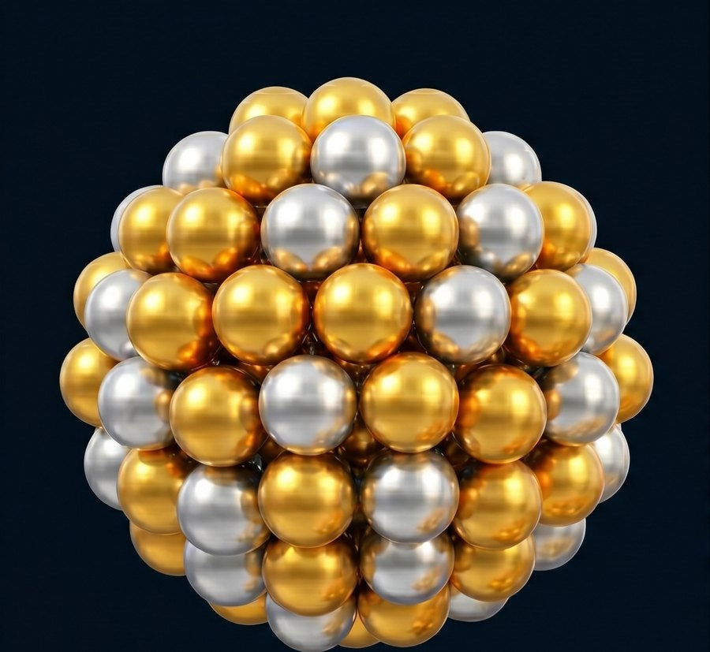
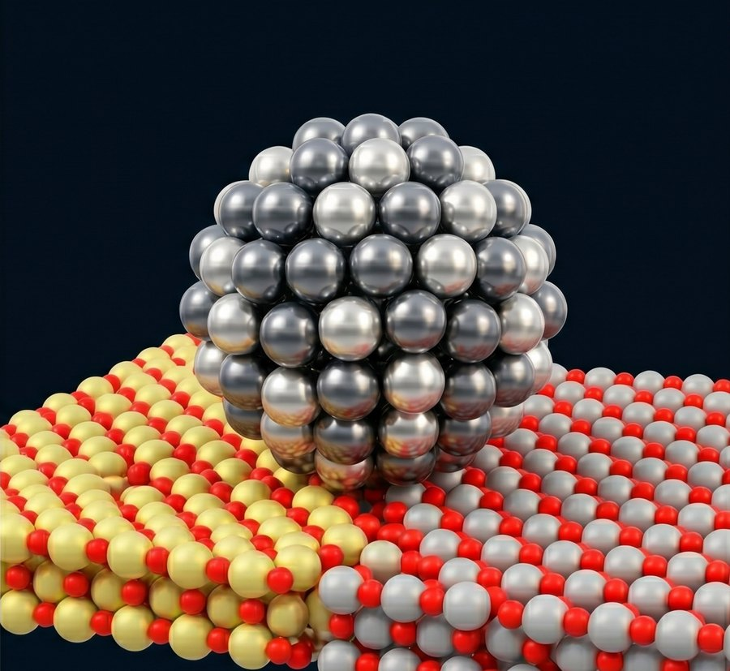

Mapping bimetallic
cluster phase space
NDU charts the energy landscape of bimetallic nanoclusters using metadynamics-driven MLIP simulations. Composition × size × support is swept end-to-end, and each system is reduced to a single number: energy above the convex hull — the thermodynamic distance to the most stable mixture.

Free cluster in vacuum
Atoms are free to rearrange in 3D. Both elements move and the cluster explores its full configuration space.
Enter gas-phase results →
Cluster on a support
Graphene or α-Al₂O₃ anchors the cluster and reshapes its accessible basins through binding geometry.
Enter supported results →Gas-phase Clusters
Free bimetallic clusters in vacuum. Composition is swept end-to-end at every cluster size, and each pair's convex hull of formation energies identifies the thermodynamically stable alloying compositions. Free-energy surfaces and metadynamics trajectories show how the clusters get there.
Energy on the Convex Hull
main result Formation energy as a function of composition. Lower-convex-hull tangent shows the thermodynamic ground state at each x.Free Energy Surfaces
FES (Q4 · Q6 · cn) 3D well-tempered metaD landscapes. Click a tile for projections and CV trajectory views.Well-tempered Metadynamics Trajectories
metaMD · animation Trajectories driven by an accumulated Gaussian bias. The smaller the cluster, the more time it spends visiting basins before being pushed out.Supported Clusters
Bimetallic clusters anchored on graphene or α-Al2O3(0001). The substrate breaks rotational symmetry and reshapes the accessible basins — binding geometry, not composition alone, decides which arrangements survive.
Free Energy Surfaces
FES on supports 3D well-tempered metaD landscapes for cluster + substrate.Well-tempered Metadynamics Trajectories
metaMD · animation Cluster motion on the support, biased along the same SOAP-derived CVs used for the gas-phase study.Theory & Methods
How the bias is built, how the FES is recovered, and how composition energetics are turned into a single thermodynamic distance from the convex hull.
Well-tempered metadynamics
An MLIP-driven Langevin MD samples the cluster at a finite temperature.
Every PACE steps a Gaussian is deposited at the current
collective-variable point s(t), building up
a history-dependent bias Vbias that drives
the system out of every basin it has already visited.
In the well-tempered variant the deposit height shrinks as bias accumulates, guaranteeing convergence:
CVs used: SOAP-derived bond-order parameters Q4, Q6 + a hetero/homo coordination ratio cn. Bias factor γ = 10.
From bias to free energy
Once Vbias covers all the basins the system has explored, the free energy surface is just the bias profile — flipped and rescaled by γ:
Low-FES regions (≤ Fmin + 0.3 eV) are sampled to extract candidate
ground-state structures. Up to 50 frames per system are LBFGS-relaxed at strict
tolerance (fmax < 0.05 eV/Å) to recover their 0 K minima.
Formation, mixing & convex hull
Time-averaged cluster energies (skipping the first 5 ps) are converted to per-atom formation energy against bulk references:
The mixing energy isolates the alloying signal by subtracting the linear interpolation between pure endpoints:
Finally, the lower convex hull of {(x, Eform)} is constructed across all sampled compositions; the
energy above hull is the vertical distance to that hull at each composition x:
Compositions on the hull (Eabove hull = 0) are thermodynamic ground states; everything above is metastable.
References
Methods, software, and substrate models used in this work. Please cite the original works when using results from this site.
- [1] Tribello, G. A.; Bonomi, M.; Branduardi, D.; Camilloni, C.; Bussi, G. PLUMED 2: New feathers for an old bird. Comput. Phys. Commun. 185, 604–613 (2014). doi:10.1016/j.cpc.2013.09.018
- [2] Barducci, A.; Bussi, G.; Parrinello, M. Well-tempered metadynamics: a smoothly converging and tunable free-energy method. Phys. Rev. Lett. 100, 020603 (2008). doi:10.1103/PhysRevLett.100.020603
- [3] FAIR Chemistry team. UMA — Universal Models for Atoms. Open Catalyst & OMat25 lineage, release uma-s-1.2-omat (2025). github.com/facebookresearch/fairchem
- [4] Bartók, A. P.; Kondor, R.; Csányi, G. On representing chemical environments. Phys. Rev. B 87, 184115 (2013). (SOAP descriptor) doi:10.1103/PhysRevB.87.184115
- [5]
Bigi, F.; Pozdnyakov, S.; Cersonsky, R.; Ceriotti, M.
featomic — atomic featurization library;
featomic-torch0.7.x. github.com/metatensor/featomic - [6] Larsen, A. H. et al. The atomic simulation environment — a Python library for working with atoms. J. Phys. Condens. Matter 29, 273002 (2017). doi:10.1088/1361-648X/aa680e
- [7] Atomistic Cookbook. Driving simulations with metatomic + PLUMED. (Workflow recipe used in this project.) atomistic-cookbook.org/examples/metatomic-plumed
- [8] Wang, X.-G. et al. The hydroxylated α-Al2O3(0001) surface. Phys. Rev. Lett. 84, 3650–3653 (2000). (Al-I termination used as the alumina support model) doi:10.1103/PhysRevLett.84.3650